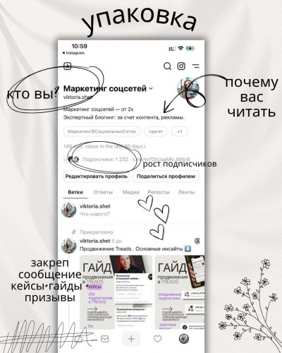
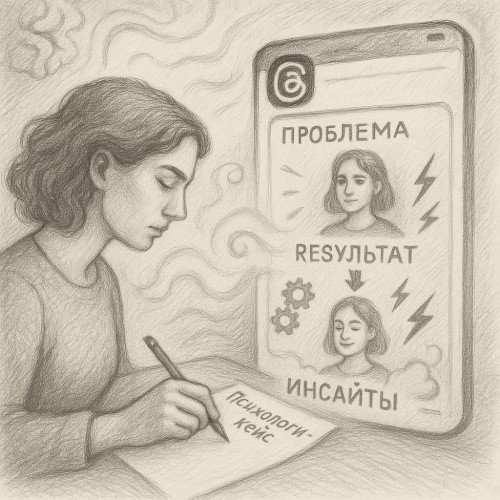
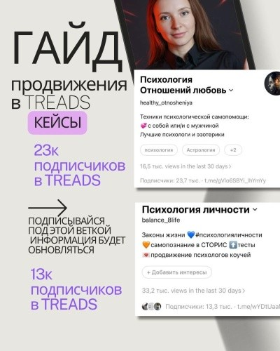

Threads можно использовать как входную точку для целевой аудитории: человек видит профиль или публикацию, получает пользу, переходит к закреплённому посту и затем — в Telegram-канал, на лид-магнит или форму записи.
Эта статья показывает, как оформить профиль, выбрать задачу закреплённого поста, выстроить регулярный контент и перевести внимание в действие. Такой путь даёт органический трафик без прямых рекламных расходов — но требует времени на регулярную публикацию и вовлечение.
План по переливу подписчиков в Telegram
Шаг 1. Оформите профиль Threads
Профиль должен отвечать на три вопроса: кто вы, почему вас стоит читать и какое действие вы предлагаете сделать дальше.
В описание профиля добавьте отсылку к закреплённому посту: «Подробнее — в закреплённом» или «Заберите чек-лист в закреплённом посте». Если цель — перевод в Telegram или запись на консультацию, сформулируйте это прямо: «Чтобы получить чек-лист, перейдите в Telegram» или «Запись на консультацию — в закреплённом».
Преимущество Threads — возможность использовать видео, карусели и кликабельные ссылки в контентной связке. Набор доступных функций может отличаться в зависимости от региона, статуса аккаунта и версии приложения — перед публикацией проверьте, что нужные форматы доступны именно вам.

Как оформить профиль Threads для переходов в Telegram
Закреплённый пост: главный конверсионный актив
В Threads доступен один закреплённый пост, поэтому в нём нужен материал с высокой конверсией: тот, который приводит к наибольшему числу переходов на единицу охвата.
Вариант 1. Лид-магнит на одну проблему
Не просто набор теории, а практичный инструмент по самопомощи или самодиагностике для одной конкретной проблемы. Форматами могут быть гайд, запись вебинара или мини-курс из трёх видео.
Важно ясно объяснить, что именно человек получит, чем материал полезен и к какому результату поможет приблизиться.
Вариант 2. Интригующий контент
Дайте пользу уже в посте, но оставьте наиболее полное раскрытие темы по ссылке в Telegram. Работает связка: конкретный результат, интрига и понятное продолжение.
Вариант 3. Кейс клиента
Если задача — получать заявки сразу в Threads, закреплённый пост должен быть построен иначе. Опишите кейс в структуре:
- проблема;
- инструменты решения;
- результат;
- инсайты клиента между этапами.
Пишите этично: убирайте личные детали и не раскрывайте конфиденциальные данные.


Схема роста и кейсы продвижения в Threads
Вариант 4. Прямой оффер
Пусть закреплённый пост работает как рекламное объявление услуги: чётко обозначьте, что предлагаете, кому это нужно и как записаться — написать в Direct, оставить заявку или перейти по ссылке. Добавьте преимущества, промежуточные результаты и ограничение по дате или количеству мест, если оно реально.
Вариант 5. Полезный разбор с CTA
Разберите типичную ситуацию, ошибку или кейс известного человека и в конце объясните, как получить консультацию. Такой пост должен иметь сильный заголовок, короткое раскрытие и явный призыв к действию.
Комбинируйте эмоциональные истории и конкретные выгоды. Главная задача закрепа — быть цепляющим, понятным и вести к одному следующему действию.
Продвижение в Threads
Шаг 1. Контент и регулярность
Определите контент-столпы. Для психолога или эксперта это могут быть:
- советы, лайфхаки и техники психологической помощи;
- анонимизированные кейсы и истории;
- ответы на вопросы аудитории;
- актуальные темы, вызовы и тренды в психологии;
- мини-разборы и формат «миф или правда».
Начинайте публикации с сильного крючка: вопроса, неожиданного факта или обещания конкретного результата. Разбивайте текст на абзацы, добавляйте списки, эмодзи и визуалы, только если они усиливают идею.
Публикуйтесь регулярно — например, несколько раз в неделю. Отмечайте дни, время, темы и форматы, которые дают лучший отклик, и подстраивайте план под то, что реально работает у вас.
Создавайте серии и рубрики: «Понедельник — техника снятия тревоги», «Четверг — разбор кейса». Это формирует ожидание и помогает аудитории возвращаться.
Используйте публикации, на которые легко ответить: вопросы, дилеммы и сценарии, где читатель может поделиться опытом.
Шаг 2. Взаимодействие и активность
Комментируйте публикации крупных тематических аккаунтов и психологов. Комментарий должен добавлять содержательную мысль: тогда люди переходят в профиль и видят закреплённый пост.
Участвуйте в ветках по смежным темам, отвечайте на комментарии, задавайте вопросы подписчикам, собирайте идеи для следующих публикаций.
Подключайте коллаборации, упоминания и гостевые посты с коллегами — только с их согласия. Используйте кросс-промо с другими площадками: например, рассказывайте в Instagram, что в Threads опубликован новый полезный материал.
Итоговая схема
- Пользователь видит профиль: через комментарий, рекомендации или кросс-пост.
- В био есть понятный призыв.
- Он открывает закреплённый пост.
- В закрепе видит сильный заголовок, пользу и CTA.
- Переходит в Telegram, к форме или в Direct и совершает целевое действие.
Как можно выстроить работу
Можно самостоятельно реализовать схему по инструкции либо заказать:
- создание высококонверсионного закреплённого поста, описания и лид-магнита;
- создание и автоматизацию контента Threads;
- комплекс: закреплённый пост и регулярный контент.
Читайте также
Больше материалов — в моём Telegram-блоге
В канале собраны материалы для психологов и экспертов о продвижении, монетизации и контент-системе:
Перейти в Telegram-блог →Хотите такую схему под вашу нишу?
Обсудим настройку контент-воронки Threads → Telegram под ваши задачи.
Получить схему Threads → Telegram →